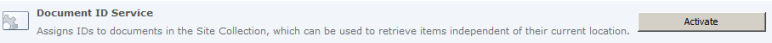
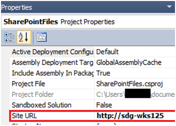
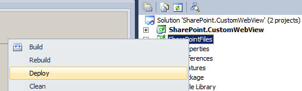
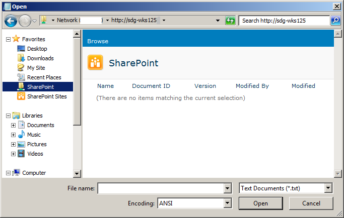

SharePoint 2010: Attaching File from Custom Web View to Outlook Message (Server)
Pre-requisites
- A SharePoint site installed at the root of a Web Application, with the document id feature turned on (Site Actions->Site Settings->Site collection features)

- Visual Studio 2010
- Outlook 2010
Note: This sample is to be used in conjunction with the corresponding Client sample and the technical article, Attaching Files from a Custom SharePoint WebView to an Outlook Message.
Development Technologies Used
Solution Overview
The solution SharePoint.CustomWebView contains 2 projects with all the components needed to run the server side customisations.
- SharePoint.CustomWebView, a standard c# project that targets the .Net framework 3.5 – contains a custom FileDialogPostProcessor for creating Web Views for the Common File Dialog
- SharePointFiles – a SharePoint project that deploys files that the FileDialogPostProcessor is dependent on.
Installing the Server
Open the solution SharePoint.CustomWebView in Visual Studio. In the solution explorer click on the SharePointFiles project. Update the Site Url in the project properties to point to the root site in your SharePoint farm. For example in the example below the server ‘http://sdg-wks125’ has a SharePoint site created at its root on port 80.

Now right click the project and select deploy.

This should install 3 files in the style library of the root site that it was deployed into. This can be verified by opening a browser and typing in the url of the site. Click ‘Site Actions’->’View All Content->’Style Library’:

Select the SharePoint.CustomWebView project and rebuild it. Then right click the HelperScript folder and select Open Folder in Windows Explorer.

Start the SharePoint 2010 management shell and change the working directory to the location just opened. The run the scripts in the following sequence:
- RunOnce.Bat – registers the component in the registry
- QuickDeploy-Debug.bat – registers the component in the gac
- RecyleAppPool80.vbs – recycles the IIS App Pool for the SharePoint site running on Port 80
- DialogSwitcher.ps1 – this last script updates a SharePoint site to use the newly installed component and needs a site’s url as a parameter:

Now verify the custom FileDialogPostProcessor is working by opening notepad, select ‘File’->’Open’ and typing in the url to the same site the DialogSwitcher.ps1 was run on. Using the example above this would be http://sdk-wks125:
